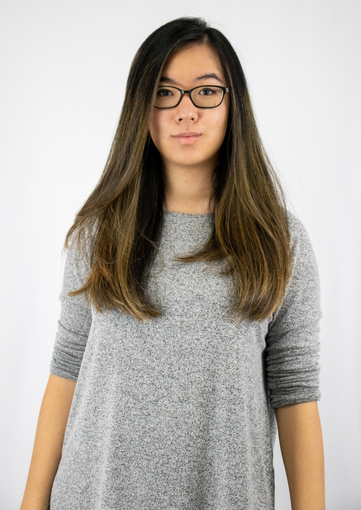

About me

Emily Hsueh is currently a student at Algonquin College studying Interactive Media design and a reporter and videographer for The Equity newspaper in Shawville, Quebec. Originally from Ottawa, she studied journalism at the University of Ottawa and Algonquin College and graduated in 2020. She has been working at The Equity since June 2020 but will soon return to Ottawa to continue her studies.
Emily is an extremely creative person and is influenced heavily by popular culture. She enjoys playing piano and bass, which she has been doing for 18 and eight years respectively. She has played with the OPO since 2018; the next season will be her 5th with the group. She draws frequently and creates costumes and props in her spare time, and thoroughly enjoys photography and photo editing. However, her biggest hobby is gaming, which (unfortunately) takes up most of her time.
"It'll all work out."- Emily Hsueh
Hobbies
- Gaming
- Emily's main hobby is gaming. She mainly plays League of Legends and has been doing so for nearly six year. She has made numerous friends from across the continent and streams her game from time to time on Twitch.
- Cosplay
- Emily's love for crafting and pop culture led her to cosplay, which means making costumes based on characters. She learned to sew for this hobby, and has made costumes from Mulan, League of Legends, Avatar the Last Airbender and more. She also enjoys taking and editing cosplay photographs.